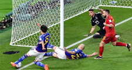

+38 (097) 555-55-01
+38 (097) 555-55-01


Про футбол
Командний вид спорту, який грається між двома командами по одинадцяти гравців зі сферичним м'ячем. Близько 250 мільйонів чоловіків і жінок із більш ніж 200 країн грають у футбол, що робить його найпопулярнішим в світі видом спорту.
У футбол грають на прямокутному полі з воротами на кожному кінці. Мета гри полягає в тому, щоб забити м'яч в ворота протилежної команди. Гравцям не дозволяєтьсяторкатися м'яча своїми руками, поки він знаходиться в грі, якщо вони не є воротарі (і тількитоді, коли в їхньому штрафному майданчику).
Або при вкиданні м'яча. Інші гравці в основному використовують свої ноги, щоб нанести удар або передати м'яч, але можуть також використовувати голову і тулуб.